Chapter Seven
Alternating Current
Alternating Current

7.1 INTRODUCTION
We have so far considered direct current (dc) sources and circuits with dc sources. These currents do not change direction with time. But voltages and currents that vary with time are very common. The electric mains supply in our homes and offices is a voltage that varies like a sine function with time. Such a voltage is called alternating voltage (ac voltage) and the current driven by it in a circuit is called the alternating current (ac current)*. Today, most of the electrical devices we use require ac voltage. This is mainly because most of the electrical energy sold by power companies is transmitted and distributed as alternating current. The main reason for preferring use of ac voltage over dc voltage is that ac voltages can be easily and efficiently converted from one voltage to the other by means of transformers. Further, electrical energy can also be transmitted economically over long distances. AC circuits exhibit characteristics which are exploited in many devices of daily use. For example, whenever we tune our radio to a favourite station, we are taking advantage of a special property of ac circuits – one of many that you will study in this chapter.
* The phrases ac voltage and ac current are contradictory and redundant, respectively, since they mean, literally, alternating current voltage and alternating current current. Still, the abbreviation ac to designate an electrical quantity displaying simple harmonic time dependance has become so universally accepted that we follow others in its use. Further, voltage – another phrase commonly used means potential difference between two points.
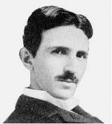
Nicola Tesla (1836 – 1943) Yugoslov scientist, inventor and genius. He conceived the idea of the rotating magnetic field, which is the basis of practically all alternating current machinery, and which helped usher in the age of electric power. He also invented among other things the induction motor, the polyphase system of ac power, and the high frequency induction coil (the Tesla coil) used in radio and television sets and other electronic equipment. The SI unit of magnetic field is named in his honour.
7.2 AC VOLTAGE APPLIED TO A RESISTOR
Figure 7.1 shows a resistor connected to a source ε of ac voltage. The symbol for an ac source in a circuit diagram is . We consider a source which produces sinusoidally varying potential difference across its terminals. Let this potential difference, also called ac voltage, be given by
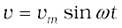 (7.1)
where vm is the amplitude of the oscillating potential difference and ω is its angular frequency.
To find the value of current through the resistor, we apply Kirchhoff’s loop rule 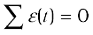, to the circuit shown in Fig. 7.1 to get

or 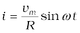
Since R is a constant, we can write this equation as
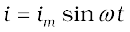 (7.2)
where the current amplitude im is given by
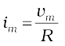 (7.3)
Equation (7.3) is just Ohm’s law which for resistors works equally well for both ac and dc voltages. The voltage across a pure resistor and the current through it, given by Eqs. (7.1) and (7.2) are plotted as a function of time in Fig. 7.2. Note, in particular that both v and i reach zero, minimum and maximum values at the same time. Clearly, the voltage and current are in phase with each other.
Figure 7.2 In a pure resistor, the voltage and current are in phase. The minima, zero and maxima occur at the same respective times.
We see that, like the applied voltage, the current varies sinusoidally and has corresponding positive and negative values during each cycle. Thus, the sum of the instantaneous current values over one complete cycle is zero, and the average current is zero. The fact that the average current is zero, however, does not mean that the average power consumed is zero and that there is no dissipation of electrical energy. As you know, Joule heating is given by i2R and depends on i2 (which is always positive whether i is positive or negative) and not on i. Thus, there is Joule heating and dissipation of electrical energy when an
ac current passes through a resistor.
The instantaneous power dissipated in the resistor is
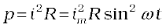 (7.4)
The average value of p over a cycle is*
 [7.5(a)]
[7.5(a)]
where the bar over a letter(here, p) denotes its average value and <......> denotes taking average of the quantity inside the bracket. Since, i2m and R are constants,
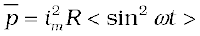 [7.5(b)]
Using the trigonometric identity, sin2 ωt =
1/2 (1– cos 2ωt), we have < sin2 ωt > = (1/2) (1– < cos 2ωt >) and since < cos2ωt > = 0**, we have,
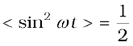
Thus,
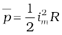 [7.5(c)]
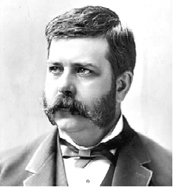
George Westinghouse (1846 – 1914) A leading proponent of the use of alternating current over direct current. Thus, he came into conflict with Thomas Alva Edison, an advocate of direct current. Westinghouse was convinced that the technology of alternating current was the key to the electrical future. He founded the famous Company named after him and enlisted the services of Nicola Tesla and other inventors in the development of alternating current motors and apparatus for the transmission of high tension current, pioneering in large scale lighting.
To express ac power in the same form as dc power (P = I2R), a special value of current is defined and used. It is called, root mean square (rms) or effective current (Fig. 7.3) and is denoted by Irms or I.
* The average value of a function F (t) over a period T is given by 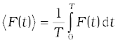
** 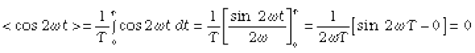
It is defined by
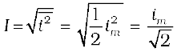
= 0.707 im (7.6)
In terms of I, the average power, denoted by P is
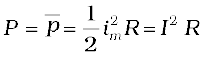 (7.7)
Similarly, we define the rms voltage or effective voltage by
V = 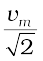 = 0.707 vm (7.8)
From Eq. (7.3), we have
vm = imR
or, 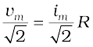
or, V = IR (7.9)
Equation (7.9) gives the relation between ac current and ac voltage and is similar to that in the dc case. This shows the advantage of introducing the concept of rms values. In terms of rms values, the equation for power [Eq. (7.7)] and relation between current and voltage in ac circuits are essentially the same as those for the dc case.
It is customary to measure and specify rms values for ac quantities. For example, the household line voltage of 220 V is an rms value with a peak voltage of
vm = 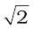 V = (1.414)(220 V) = 311 V
In fact, the I or rms current is the equivalent dc current that would produce the same average power loss as the alternating current. Equation (7.7) can also be written as
P = V2 / R = I V (since V = I R)
Example 7.1 A light bulb is rated at 100W for a 220 V supply. Find (a) the resistance of the bulb; (b) the peak voltage of the source; and (c) the rms current through the bulb.
Solution
(a) We are given P = 100 W and V = 220 V. The resistance of the
bulb is
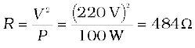
(b) The peak voltage of the source is
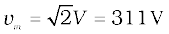
(c) Since, P = I V
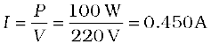
7.3 REPRESENTATION OF AC CURRENT AND VOLTAGE BY ROTATING VECTORS — PHASORS
In the previous section, we learnt that the current through a resistor is in phase with the ac voltage. But this is not so in the case of an inductor, a capacitor or a combination of these circuit elements. In order to show phase relationship between voltage and current in an ac circuit, we use the notion of phasors. The analysis of an ac circuit is facilitated by the use of a phasor diagram. A phasor* is a vector which rotates about the origin with angular speed ω, as shown in Fig. 7.4. The vertical components of phasors V and I represent the sinusoidally varying quantities v and i. The magnitudes of phasors V and I represent the amplitudes or the peak values vm and im of these oscillating quantities. Figure 7.4(a) shows the voltage and current phasors and their relationship at time t1 for the case of an ac source connected to a resistor i.e., corresponding to the circuit shown in Fig. 7.1. The projection of voltage and current phasors on vertical axis, i.e., vm sinωt and im sinωt, respectively represent the value of voltage and current at that instant. As they rotate with frequency ω, curves in Fig. 7.4(b) are generated.
From Fig. 7.4(a) we see that phasors V and I for the case of a resistor are in the same direction. This is so for all times. This means that the phase angle between the voltage and the current is zero.

Figure 7.4 (a) A phasor diagram for the circuit in Fig 7.1. (b) Graph of v and
i versus ωt.
7.4 AC VOLTAGE APPLIED TO AN INDUCTOR
Figure 7.5 shows an ac source connected to an inductor. Usually, inductors have appreciable resistance in their windings, but we shall assume that this inductor has negligible resistance. Thus, the circuit is a purely inductive ac circuit. Let the voltage across the source be v = vm sinωt. Using the Kirchhoff’s loop rule, 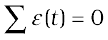, and since there is no resistor in the circuit,
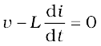 (7.10)

Figure 7.5 An ac source connected to an inductor.
where the second term is the self-induced Faraday emf in the inductor; and L is the self-inductance of the inductor. The negative sign follows from Lenz’s law (Chapter 6). Combining Eqs. (7.1) and (7.10), we have
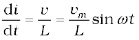 (7.11)
* Though voltage and current in ac circuit are represented by phasors – rotating vectors, they are not vectors themselves. They are scalar quantities. It so happens that the amplitudes and phases of harmonically varying scalars combine mathematically in the same way as do the projections of rotating vectors of corresponding magnitudes and directions. The rotating vectors that represent harmonically varying scalar quantities are introduced only to provide us with a simple way of adding these quantities using a rule that we already know.
Equation (7.11) implies that the equation for i(t), the current as a function of time, must be such that its slope di/dt is a sinusoidally varying quantity, with the same phase as the source voltage and an amplitude given by vm/L. To obtain the current, we integrate di/dt with respect to time:
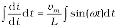
and get,
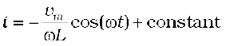

Interactive animation on Phasor diagrams of ac circuits containing, R, L, C and RLC series circuits:
http://www.animations.physics.unsw.edu.au//jw/AC.html
The integration constant has the dimension of current and is time-independent. Since the source has an emf which oscillates symmetrically about zero, the current it sustains also oscillates symmetrically about zero, so that no constant or time-independent component of the current exists. Therefore, the integration constant is zero.
Using
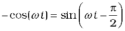, we have
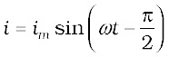 (7.12)
where 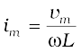is the amplitude of the current. The quantity ω L is analogous to the resistance and is called inductive reactance, denoted by XL:
XL = ω L (7.13)
The amplitude of the current is, then
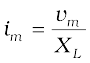 (7.14)
The dimension of inductive reactance is the same as that of resistance and its SI unit is ohm (Ω). The inductive reactance limits the current in a purely inductive circuit in the same way as the resistance limits the current in a purely resistive circuit. The inductive reactance is directly proportional to the inductance and to the frequency of the current.
A comparison of Eqs. (7.1) and (7.12) for the source voltage and the current in an inductor shows that the current lags the voltage by π/2 or one-quarter (1/4) cycle. Figure 7.6 (a) shows the voltage and the current phasors in the present case at instant t1. The current phasor I is π/2 behind the voltage phasor V. When rotated with frequency ω counter-clockwise, they generate the voltage and current given by Eqs. (7.1) and (7.12), respectively and as shown in Fig. 7.6(b).
We see that the current reaches its maximum value later than the voltage by one-fourth of a period 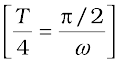. You have seen that an inductor has reactance that limits current similar to resistance in a dc circuit. Does it also consume power like a resistance? Let us try to find out.
The instantaneous power supplied to the inductor is
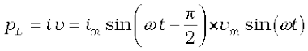
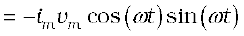
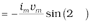
So, the average power over a complete cycle is
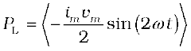
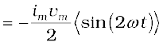= 0,
since the average of sin (2ωt) over a complete cycle is zero.
Thus, the average power supplied to an inductor over one complete cycle is zero.
Figure 7.7 explains it in detail.
Example 7.2 A pure inductor of 25.0 mH is connected to a source of 220 V. Find the inductive reactance and rms current in the circuit if the frequency of the source is 50 Hz.
Solution The inductive reactance,
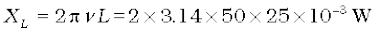
= 7.85Ω
The rms current in the circuit is
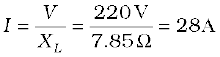

0-1 Current i through the coil entering at A increase from zero to a maximum value. Flux lines are set up i.e., the core gets magnetised. With the polarity shown voltage and current are both positive. So their product p is positive. ENERGY IS ABSORBED FROM THE SOURCE.
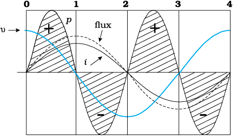
One complete cycle of voltage/current. Note that the current lags the voltage.
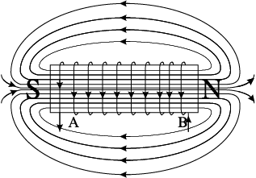
2-3 Current i becomes negative i.e., it enters at B and comes out of A. Since the direction of current has changed, the polarity of the magnet changes. The current and voltage are both negative. So their product p is positive. ENERGY IS ABSORBED.
1-2 Current in the coil is still positive but is decreasing. The core gets demagnetised and the net flux becomes zero at the end of a half cycle. The voltage v is negative (since di/dt is negative). The product of voltage and current is negative, and ENERGY IS BEING RETURNED TO SOURCE.

3-4 Current i decreases and reaches its zero value at 4 when core is demagnetised and flux is zero. The voltage is positive but the current is negative. The power is, therefore, negative. ENERGY ABSORBED DURING THE 1/4 CYCLE 2-3 IS RETURNED TO THE SOURCE.
Figure 7.7 Magnetisation and demagnetisation of an inductor.
7.5 AC VOLTAGE APPLIED TO A CAPACITOR
Figure 7.8 shows an ac source ε generating ac voltage v = vm sin ωt connected to a capacitor only, a purely capacitive ac circuit.
When a capacitor is connected to a voltage source in a dc circuit, current will flow for the short time required to charge the capacitor. As charge accumulates on the capacitor plates, the voltage across them increases, opposing the current. That is, a capacitor in a dc circuit will limit or oppose the current as it charges. When the capacitor is fully charged, the current in the circuit falls to zero.

Figure 7.8 An ac source connected to a capacitor.
When the capacitor is connected to an ac source, as in Fig. 7.8, it limits or regulates the current, but does not completely prevent the flow of charge. The capacitor is alternately charged and discharged as the current reverses each half cycle. Let q be the charge on the capacitor at any time t. The instantaneous voltage v across the capacitor is
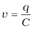 (7.15)
From the Kirchhoff’s loop rule, the voltage across the source and the capacitor are equal,
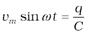
To find the current, we use the relation 
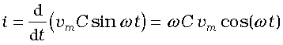
Using the relation, 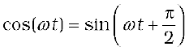, we have
(7.16)
where the amplitude of the oscillating current is im = ωCvm. We can rewrite it as
Comparing it to im= vm/R for a purely resistive circuit, we find that (1/ωC) plays the role of resistance. It is called capacitive reactance and is denoted by Xc,
Xc= 1/ωC (7.17)
so that the amplitude of the current is
(7.18)

Figure 7.9 (a) A Phasor diagram for the circuit in Fig. 7.8. (b) Graph of v andi versus ωt.
The dimension of capacitive reactance is the same as that of resistance and its SI unit is ohm (Ω). The capacitive reactance limits the amplitude of the current in a purely capacitive circuit in the same way as the resistance limits the current in a purely resistive circuit. But it is inversely proportional to the frequency and the capacitance.
A comparison of Eq. (7.16) with the equation of source voltage, Eq. (7.1) shows that the current is π/2 ahead of voltage.
Figure 7.9(a) shows the phasor diagram at an instant t1. Here the current phasor I is π/2 ahead of the voltage phasor V as they rotate counterclockwise. Figure 7.9(b) shows the variation of voltage and current with time. We see that the current reaches its maximum value earlier than the voltage by one-fourth of a period.
The instantaneous power supplied to the capacitor is
pc = i v = im cos(ωt)vm sin(ωt)
= imvm cos(ωt) sin(ωt)
(7.19)
So, as in the case of an inductor, the average power
since <sin (2ωt)> = 0 over a complete cycle. Figure 7.10 explains it in detail.
Thus, we see that in the case of an inductor, the current lags the voltage by π/2 and in the case of a capacitor, the current leads the voltage by π/2.
Example 7.3 A lamp is connected in series with a capacitor. Predict your observations for dc and ac connections. What happens in each case if the capacitance of the capacitor is reduced?
Solution When a dc source is connected to a capacitor, the capacitor gets charged and after charging no current flows in the circuit and the lamp will not glow. There will be no change even if C is reduced. With ac source, the capacitor offers capacitative reactance (1/ωC) and the current flows in the circuit. Consequently, the lamp will shine. Reducing C will increase reactance and the lamp will shine less brightly than before.
Example 7.4 A 15.0 µF capacitor is connected to a 220 V, 50 Hz source. Find the capacitive reactance and the current (rms and peak) in the circuit. If the frequency is doubled, what happens to the capacitive reactance and the current?
Solution The capacitive reactance is
The rms current is
The peak current is
This current oscillates between +1.47A and –1.47 A, and is ahead of the voltage by π/2.
If the frequency is doubled, the capacitive reactance is halved and consequently, the current is doubled.

0-1 The current i flows as shown and from the maximum at 0, reaches a zero value at 1. The plate A is charged to positive polarity while negative charge qbuilds up in B reaching a maximum at 1 until the current becomes zero. The voltage vc = q/C is in phase with q and reaches maximum value at 1. Current and voltage are both positive. So p = vci is positive.
Energy is absorbed from THE SOURCE during this quarter cycle AS THE CAPACITOR IS CHARGED.
One complete cycle of voltage/current. Note that the current leads the voltage.

2-3 As i continues to flow from A to B, the capacitor is charged to reversed polarity i.e., the plate B acquires positive and A acquires negative charge. Both the current and the voltage are negative. Their product p is positive. The capacitor ABSORBS ENERGY during this 1/4 cycle.

1-2 The current i reverses its direction. The accumulated charge is depleted i.e., the capacitor is discharged during this quarter cycle.The voltage gets reduced but is still positive. The current is negative. Their product, the power is negative.
the Energy absorbed during THE 1/4 CYCLE 0-1 IS RETURNED DURING this QUARTER.
3-4 The current i reverses its direction at 3 and flows from B to A. The accumulated charge is depleted and the magnitude of the voltage vc is reduced. vc becomes zero at 4 when the capacitor is fully discharged. The power is negative.ENERGY ABSORBED DURING 2-3 IS RETURNED TO THE SOURCE. NET ENERGY ABSORBED IS ZERO.
Figure 7.10 Charging and discharging of a capacitor.
Example 7.5 A light bulb and an open coil inductor are connected to an ac source through a key as shown in Fig. 7.11.

Figure 7.11
The switch is closed and after sometime, an iron rod is inserted into the interior of the inductor. The glow of the light bulb (a) increases; (b) decreases; (c) is unchanged, as the iron rod is inserted. Give your answer with reasons.
Solution As the iron rod is inserted, the magnetic field inside the coil magnetizes the iron increasing the magnetic field inside it. Hence, the inductance of the coil increases. Consequently, the inductive reactance of the coil increases. As a result, a larger fraction of the applied ac voltage appears across the inductor, leaving less voltage across the bulb. Therefore, the glow of the light bulb decreases.
7.6 AC VOLTAGE APPLIED TO A SERIES LCR CIRCUIT
Figure 7.12 shows a series LCR circuit connected to an ac source ε. As usual, we take the voltage of the source to be v = vm sin ωt.

If q is the charge on the capacitor and i the current, at time t, we have, from Kirchhoff’s loop rule:
(7.20)
We want to determine the instantaneous current i and its phase relationship to the applied alternating voltage v. We shall solve this problem by two methods. First, we use the technique of phasors and in the second method, we solve
Eq. (7.20) analytically to obtain the time–dependence of i.
7.6.1 Phasor-diagram solution
From the circuit shown in Fig. 7.12, we see that the resistor, inductor and capacitor are in series. Therefore, the ac current in each element is the same at any time, having the same amplitude and phase. Let it be
i = im sin(ωt+φ) (7.21)
where φ is the phase difference between the voltage across the source and the current in the circuit. On the basis of what we have learnt in the previous sections, we shall construct a phasor diagram for the present case.
Let I be the phasor representing the current in the circuit as given by Eq. (7.21). Further, let VL, VR, VC, and V represent the voltage across the inductor, resistor, capacitor and the source, respectively. From previous section, we know that VR is parallel to I, VC is π/2 behind I and VL is π/2 ahead of I. VL, VR, VC and I are shown in Fig. 7.13(a) with apppropriate phase-relations.
The length of these phasors or the amplitude of VR, VC and VL are:
vRm = im R, vCm = im XC, vLm = im XL (7.22)
The voltage Equation (7.20) for the circuit can be written as
vL + vR + vC = v (7.23)
The phasor relation whose vertical component gives the above equation is
VL + VR + VC = V (7.24)
This relation is represented in Fig. 7.13(b). Since VC and VL are always along the same line and in opposite directions, they can be combined into a single phasor (VC + VL) which has a magnitude vCm – vLm. Since V is represented as the hypotenuse of a right-traingle whose sides are VR and (VC + VL), the pythagorean theorem gives:

Substituting the values of vRm, vCm, and vLm from Eq. (7.22) into the above equation, we have
or, [7.25(a)]
By analogy to the resistance in a circuit, we introduce the impedance Z in an ac circuit:
 [7.25(b)]
[7.25(b)]
where (7.26)
Since phasor I is always parallel to phasor VR, the phase angle φ is the angle between VR and V and can be determined from Fig. 7.14:
Using Eq. (7.22), we have
(7.27)
Equations (7.26) and (7.27) are graphically shown in Fig. (7.14). This is called Impedance diagram which is a right-triangle with Z as its hypotenuse.
Equation 7.25(a) gives the amplitude of the current and Eq. (7.27) gives the phase angle. With these, Eq. (7.21) is completely specified.
If XC > XL, φ is positive and the circuit is predominantly capacitive. Consequently, the current in the circuit leads the source voltage. If XC < XL, φ is negative and the circuit is predominantly inductive. Consequently, the current in the circuit lags the source voltage.

Figure 7.15 (a) Phasor diagram of V and I. (b) Graphs of v and i versus ω t for a series LCR circuit where XC > XL.
Figure 7.15 shows the phasor diagram and variation of v and i with ω t for the case XC > XL.
Thus, we have obtained the amplitude and phase of current for an LCR series circuit using the technique of phasors. But this method of analysing ac circuits suffers from certain disadvantages. First, the phasor diagram say nothing about the initial condition. One can take any arbitrary value of t (say, t1, as done throughout this chapter) and draw different phasors which show the relative angle between different phasors. The solution so obtained is called the steady-state solution. This is not a general solution. Additionally, we do have a transient solution which exists even for v = 0. The general solution is the sum of the transient solution and the steady-state solution. After a sufficiently long time, the effects of the transient solution die out and the behaviour of the circuit is described by the steady-state solution.
7.6.2 Analytical solution
The voltage equation for the circuit is
= vm sin ωt
We know that i = dq/dt. Therefore, di/dt = d2q/dt2. Thus, in terms of q, the voltage equation becomes
(7.28)
This is like the equation for a forced, damped oscillator, [see Eq. {14.37(b)} in Class XI Physics Textbook]. Let us assume a solution
q = qm sin (ω t + θ) [7.29(a)]
so that [7.29(b)]
and [7.29(c)]
Substituting these values in Eq. (7.28), we get
= (7.30)
where we have used the relation Xc= 1/ωC, XL = ω L. Multiplying and dividing Eq. (7.30) by , we have
(7.31)
Now, let
and
so that  (7.32)
(7.32)
Substituting this in Eq. (7.31) and simplifying, we get:
(7.33)
Comparing the two sides of this equation, we see that
where
 [7.33(a)]
[7.33(a)]
and or [7.33(b)]
Therefore, the current in the circuit is
= im cos(ωt + θ)
or i = imsin(ωt + φ) (7.34)
where  [7.34(a)]
[7.34(a)]
and
Thus, the analytical solution for the amplitude and phase of the current in the circuit agrees with that obtained by the technique of phasors.
7.6.3 Resonance
An interesting characteristic of the series RLC circuit is the phenomenon of resonance. The phenomenon of resonance is common among systems that have a tendency to oscillate at a particular frequency. This frequency is called the system’s natural frequency. If such a system is driven by an energy source at a frequency that is near the natural frequency, the amplitude of oscillation is found to be large. A familiar example of this phenomenon is a child on a swing. The the swing has a natural frequency for swinging back and forth like a pendulum. If the child pulls on the rope at regular intervals and the frequency of the pulls is almost the same as the frequency of swinging, the amplitude of the swinging will be large (Chapter 14, Class XI).
For an RLC circuit driven with voltage of amplitude vm and frequency ω, we found that the current amplitude is given by

with Xc = 1/ωC and XL = ω L. So if ω is varied, then at a particular frequency ω0, Xc = XL, and the impedance is minimum . This frequency is called the resonant frequency:
or (7.35)
At resonant frequency, the current amplitude is maximum; im = vm/R.
Figure 7.16 shows the variation of im with ω in a RLC series circuit with L = 1.00 mH, C =1.00 nF for two values of R: (i) R = 100 Ω and (ii) R = 200 Ω. For the source applied vm = 100 V. ω0 for this case is = 1.00×106
rad/s.

Figure 7.16 Variation of im with ω for two cases: (i) R = 100 Ω, (ii) R = 20 Ω, L = 1.00 mH. C = 1.00 nF and vm = 100 V for both cases.
We see that the current amplitude is maximum at the resonant frequency. Since im = vm / R at resonance, the current amplitude for case (i) is twice to that for case (ii).
Resonant circuits have a variety of applications, for example, in the tuning mechanism of a radio or a TV set. The antenna of a radio accepts signals from many broadcasting stations. The signals picked up in the antenna acts as a source in the tuning circuit of the radio, so the circuit can be driven at many frequencies. But to hear one particular radio station, we tune the radio. In tuning, we vary the capacitance of a capacitor in the tuning circuit such that the resonant frequency of the circuit becomes nearly equal to the frequency of the radio signal received. When this happens, the amplitude of the current with the frequency of the signal of the particular radio station in the circuit is maximum.
It is important to note that resonance phenomenon is exhibited by a circuit only if both L and C are present in the circuit. Only then do the voltages across L and C cancel each other (both being out of phase) and the current amplitude is vm/R, the total source voltage appearing across R. This means that we cannot have resonance in a RL or RC circuit.
Sharpness of resonance
The amplitude of the current in the series LCR circuit is given by
and is maximum when The maximum value is .
For values of ω other than ω0, the amplitude of the current is less than the maximum value. Suppose we choose a value of ω for which the current amplitude is times its maximum value. At this value, the power dissipated by the circuit becomes half. From the curve in
Fig. (7.16), we see that there are two such values of ω, say, ω1 and ω2, one greater and the other smaller than ω0 and symmetrical about ω0. We may write
ω1 = ω0 + ∆ω
ω2 = ω0 – ∆ω
The difference ω1 – ω2 = 2∆ω is often called the bandwidth of the circuit. The quantity (ω0 / 2∆ω) is regarded as a measure of the sharpness of resonance. The smaller the ∆ω, the sharper or narrower is the resonance.
To get an expression for ∆ω, we note that the current amplitude im is for ω1 = ω0 + ∆ω. Therefore,
or
or
which may be written as,
Using in the second term on the left hand side, we get
We can approximate as since <<1. Therefore,
or
[7.36(a)]
The sharpness of resonance is given by,
[7.36(b)]
The ratio is also called the quality factor, Q of the circuit.
[7.36(c)]
From Eqs. [7.36 (b)] and [7.36 (c)], we see that . So, larger the value of Q, the smaller is the value of 2∆ω or the bandwidth and sharper is the resonance. Using  , Eq. [7.36(c)] can be equivalently expressed as Q = 1/ω0CR.
, Eq. [7.36(c)] can be equivalently expressed as Q = 1/ω0CR.
We see from Fig. 7.15, that if the resonance is less sharp, not only is the maximum current less, the circuit is close to resonance for a larger range ∆ω of frequencies and the tuning of the circuit will not be good. So, less sharp the resonance, less is the selectivity of the circuit or vice versa. From Eq. (7.36), we see that if quality factor is large, i.e., R is low or L is large, the circuit is more selective.
Example 7.6 A resistor of 200 Ω and a capacitor of 15.0 µF are connected in series to a 220 V, 50 Hz ac source. (a) Calculate the current in the circuit; (b) Calculate the voltage (rms) across the resistor and the capacitor. Is the algebraic sum of these voltages more than the source voltage? If yes, resolve the paradox.
Solution
Given
(a) In order to calculate the current, we need the impedance of the circuit. It is
Therefore, the current in the circuit is
(b) Since the current is the same throughout the circuit, we have

The algebraic sum of the two voltages, VR and VC is 311.3 V which is more than the source voltage of 220 V. How to resolve this paradox? As you have learnt in the text, the two voltages are not in the same phase. Therefore, they cannot be added like ordinary numbers. The two voltages are out of phase by ninety degrees. Therefore, the total of these voltages must be obtained using the Pythagorean theorem:
= 220 V
Thus, if the phase difference between two voltages is properly taken into account, the total voltage across the resistor and the capacitor is equal to the voltage of the source.
7.7 POWER IN AC CIRCUIT: THE POWER FACTOR
We have seen that a voltage v = vm sinωt applied to a series RLC circuit drives a current in the circuit given by i = im sin(ωt + φ) where
 and
and
Therefore, the instantaneous power p supplied by the source is
(7.37)
The average power over a cycle is given by the average of the two terms in R.H.S. of Eq. (7.37). It is only the second term which is time-dependent. Its average is zero (the positive half of the cosine cancels the negative half). Therefore,
[7.38(a)]
This can also be written as,
 [7.38(b)]
[7.38(b)]
So, the average power dissipated depends not only on the voltage and current but also on the cosine of the phase angle φ between them. The quantity cosφ is called the power factor. Let us discuss the following cases:
Case (i) Resistive circuit: If the circuit contains only pure R, it is called resistive. In that case φ = 0, cos φ = 1. There is maximum power dissipation.
Case (ii) Purely inductive or capacitive circuit: If the circuit contains only an inductor or capacitor, we know that the phase difference between voltage and current is π/2. Therefore, cos φ = 0, and no power is dissipated even though a current is flowing in the circuit. This current is sometimes referred to as wattless current.
Case (iii) LCR series circuit: In an LCR series circuit, power dissipated is given by Eq. (7.38) where φ = tan–1 (Xc – XL )/ R. So, φ may be non-zero in a RL or RC or RCL circuit. Even in such cases, power is dissipated only in the resistor.
Case (iv) Power dissipated at resonance in LCR circuit: At resonance
Xc – XL= 0, and φ = 0. Therefore, cosφ = 1 and P = I2Z = I2 R. That is, maximum power is dissipated in a circuit (through R) at resonance.
Example7.7 (a) For circuits used for transporting electric power, a low power factor implies large power loss in transmission. Explain.
(b) Power factor can often be improved by the use of a capacitor of appropriate capacitance in the circuit. Explain.
Solution (a) We know that P = I V cosφ where cosφ is the power factor. To supply a given power at a given voltage, if cosφ is small, we have to increase current accordingly. But this will lead to large power loss (I2R) in transmission.
(b)Suppose in a circuit, current I lags the voltage by an angle φ. Then power factor cosφ =R/Z.

We can improve the power factor (tending to 1) by making Z tend to R. Let us understand, with the help of a phasor diagram (Fig. 7.17) how this can be achieved. Let us resolve I into two components. Ip along the applied voltage V and Iq perpendicular to the applied voltage. Iq as you have learnt in Section 7.7, is called the wattless component since corresponding to this component of current, there is no power loss. IP is known as the power component because it is in phase with the voltage and corresponds to power loss in the circuit.
It’s clear from this analysis that if we want to improve power factor, we must completely neutralize the lagging wattless current Iq by an equal leading wattless current I′q. This can be done by connecting a capacitor of appropriate value in parallel so that Iq and I′q cancel each other and P is effectively Ip V.
Example 7.8 A sinusoidal voltage of peak value 283 V and frequency 50 Hz is applied to a series LCR circuit in which
R = 3 Ω, L = 25.48 mH, and C = 796 µF. Find (a) the impedance of the circuit; (b) the phase difference between the voltage across the source and the current; (c) the power dissipated in the circuit; and (d) the power factor.
Solution
(a) To find the impedance of the circuit, we first calculate XL and XC.
XL = 2 πνL
= 2 × 3.14 × 50 × 25.48 × 10–3 Ω = 8 Ω
Therefore,
= 5 Ω
(b) Phase difference, φ = tan–1
Since φ is negative, the current in the circuit lags the voltage across the source.
(c) The power dissipated in the circuit is
Now,
Therefore,
(d) Power factor =
Example 7.9 Suppose the frequency of the source in the previous example can be varied. (a) What is the frequency of the source at which resonance occurs? (b) Calculate the impedance, the current, and the power dissipated at the resonant condition.
Solution
(a) The frequency at which the resonance occurs is
(b) The impedance Z at resonant condition is equal to the resistance:
The rms current at resonance is
The power dissipated at resonance is
You can see that in the present case, power dissipated at resonance is more than the power dissipated in Example 7.8.
Example 7.10 At an airport, a person is made to walk through the doorway of a metal detector, for security reasons. If she/he is carrying anything made of metal, the metal detector emits a sound. On what principle does this detector work?
Solution The metal detector works on the principle of resonance in ac circuits. When you walk through a metal detector, you are, in fact, walking through a coil of many turns. The coil is connected to a capacitor tuned so that the circuit is in resonance. When you walk through with metal in your pocket, the impedance of the circuit changes – resulting in significant change in current in the circuit. This change in current is detected and the electronic circuitry causes a sound to be emitted as an alarm.
7.8 LC OSCILLATIONS
We know that a capacitor and an inductor can store electrical and magnetic energy, respectively. When a capacitor (initially charged) is connected to an inductor, the charge on the capacitor and the current in the circuit exhibit the phenomenon of electrical oscillations similar to oscillations in mechanical systems (Chapter 14, Class XI).
Let a capacitor be charged qm (at t = 0) and connected to an inductor as shown in Fig. 7.18.

Figure 7.18 At the instant shown, the current is increasing so the polarity of induced emf in the inductor is as shown.
The moment the circuit is completed, the charge on the capacitor starts decreasing, giving rise to current in the circuit. Let q and i be the charge and current in the circuit at time t. Since di/dt is positive, the induced emf in L will have polarity as shown, i.e., vb < va. According to Kirchhoff’s loop rule,
(7.39)
i = – (dq/dt) in the present case (as q decreases, i increases). Therefore, Eq. (7.39) becomes:
(7.40)
This equation has the form for a simple harmonic oscillator. The charge, therefore, oscillates with a natural frequency
(7.41)
and varies sinusoidally with time as
(7.42)
where qm is the maximum value of q and φ is a phase constant. Since
q = qm at t = 0, we have cos φ =1 or φ = 0. Therefore, in the present case,
(7.43)
The current is given by
(7.44)
where
Let us now try to visualise how this oscillation takes place in the circuit.
Figure 7.19(a) shows a capacitor with initial charge qm connected to an ideal inductor. The electrical energy stored in the charged capacitor is . Since, there is no current in the circuit, energy in the inductor is zero. Thus, the total energy of LC circuit is,

Figure 7.19 The oscillations in an LC circuit are analogous to the oscillation of a block at the end of a spring. The figure depicts one-half of a cycle.
At t = 0, the switch is closed and the capacitor starts to discharge [Fig. 7.19(b)]. As the current increases, it sets up a magnetic field in the inductor and thereby, some energy gets stored in the inductor in the form of magnetic energy: UB = (1/2) Li2. As the current reaches its maximum value im, (at t = T/4) as in Fig. 7.19(c), all the energy is stored in the magnetic field: UB = (1/2) Li2m. You can easily check that the maximum electrical energy equals the maximum magnetic energy. The capacitor now has no charge and hence no energy. The current now starts charging the capacitor, as in Fig. 7.19(d). This process continues till the capacitor is fully charged (at t = T/2) [Fig. 7.19(e)]. But it is charged with a polarity opposite to its initial state in Fig. 7.19(a). The whole process just described will now repeat itself till the system reverts to its original state. Thus, the energy in the system oscillates between the capacitor and the inductor.
The LC oscillation is similar to the mechanical oscillation of a block attached to a spring. The lower part of each figure in Fig. 7.19 depicts the corresponding stage of a mechanical system (a block attached to a spring). As noted earlier, for a block of a mass m oscillating with frequency ω0, the equation is
Here,  , and k is the spring constant. So, x corresponds to q. In case of a mechanical system F = ma = m (dv/dt) = m (d2x/dt2). For an electrical system, ε = –L (di/dt) = –L (d2q/dt2). Comparing these two equations, we see that L is analogous to mass m: L is a measure of resistance to change in current. In case of LC circuit, and for mass on a spring, . So, 1/C is analogous to k. The constant k (=F/x) tells us the (external) force required to produce a unit displacement whereas 1/C (=V/q) tells us the potential difference required to store a unit charge. Table 7.1 gives the analogy between mechanical and electrical quantities.
, and k is the spring constant. So, x corresponds to q. In case of a mechanical system F = ma = m (dv/dt) = m (d2x/dt2). For an electrical system, ε = –L (di/dt) = –L (d2q/dt2). Comparing these two equations, we see that L is analogous to mass m: L is a measure of resistance to change in current. In case of LC circuit, and for mass on a spring, . So, 1/C is analogous to k. The constant k (=F/x) tells us the (external) force required to produce a unit displacement whereas 1/C (=V/q) tells us the potential difference required to store a unit charge. Table 7.1 gives the analogy between mechanical and electrical quantities.
Table 7.1 Analogies between mechanical and electrical quantities
Note that the above discussion of LC oscillations is not realistic for two reasons:
(i) Every inductor has some resistance. The effect of this resistance is to introduce a damping effect on the charge and current in the circuit and the oscillations finally die away.
(ii) Even if the resistance were zero, the total energy of the system would not remain constant. It is radiated away from the system in the form of electromagnetic waves (discussed in the next chapter). In fact, radio and TV transmitters depend on this radiation.
Two different phenomena, same mathematical treatment
You may like to compare the treatment of a forced damped oscillator discussed in Section 14.10 of Class XI physics textbook, with that of an LCR circuit when an ac voltage is applied in it. We have already remarked that Eq. [14.37(b)] of Class XI Textbook is exactly similar to Eq. (7.28) here, although they use different symbols and parameters. Let us therefore list the equivalence between different quantities in the two situations:
You must note that since x corresponds to q, the amplitude A (maximum displacement) will correspond to the maximum charge stored, qm. Equation [14.39 (a)] of Class XI gives the amplitude of oscillations in terms of other parameters, which we reproduce here for convenience:
Replace each parameter in the above equation by the corresponding electrical quantity, and see what happens. Eliminate L, C, ω , and ω0, using XL= ωL,XC = 1/ωC, and ω02 = 1/LC. When you use Eqs. (7.33) and (7.34), you will see that there is a perfect match.
You will come across numerous such situations in physics where diverse physical phenomena are represented by the same mathematical equation. If you have dealt with one of them, and you come across another situation, you may simply replace the corresponding quantities and interpret the result in the new context. We suggest that you may try to find more such parallel situations from different areas of physics. One must, of course, be aware of the differences too.
Example 7.11 Show that in the free oscillations of an LC circuit, the sum of energies stored in the capacitor and the inductor is constant in time.
Solution Let q0 be the initial charge on a capacitor. Let the charged capacitorbe connected to an inductor of inductance L. As you have studied in Section 7.8, this LC circuit will sustain an oscillation with frquency
ω
At an instant t, charge q on the capacitor and the current i are given by:
q (t) = q0 cos ωt
i (t) = – q0 ω sin ωt
Energy stored in the capacitor at time t is
Energy stored in the inductor at time t is
Sum of energies
This sum is constant in time as qo and C, both are time-independent.
Note that it is equal to the initial energy of the capacitor. Why it is so? Think!
7.9 TRANSFORMERS
For many purposes, it is necessary to change (or transform) an alternating voltage from one to another of greater or smaller value. This is done with a device called transformer using the principle of mutual induction.
A transformer consists of two sets of coils, insulated from each other. They are wound on a soft-iron core, either one on top of the other as in Fig. 7.20(a) or on separate limbs of the core as in Fig. 7.20(b). One of the coils called the primary coil has Np turns. The other coil is called the secondary coil; it has Ns turns. Often the primary coil is the input coil and the secondary coil is the output coil of the transformer.

When an alternating voltage is applied to the primary, the resulting current produces an alternating magnetic flux which links the secondary and induces an emf in it. The value of this emf depends on the number of turns in the secondary. We consider an ideal transformer in which the primary has negligible resistance and all the flux in the core links both primary and secondary windings. Let φ be the flux in each turn in the core at time t due to current in the primary when a voltage vp is applied to it.
Then the induced emf or voltage εs, in the secondary with Ns turns is
(7.45)
The alternating flux φ also induces an emf, called back emf in the primary. This is
(7.46)
But εp = vp. If this were not so, the primary current would be infinite since the primary has zero resistance(as assumed). If the secondary is an open circuit or the current taken from it is small, then to a good approximation
εs = vs
where vs is the voltage across the secondary. Therefore, Eqs. (7.45) and (7.46) can be written as
[7.45(a)]
[7.46(a)]
From Eqs. [7.45 (a)] and [7.46 (a)], we have
(7.47)
Note that the above relation has been obtained using three assumptions: (i) the primary resistance and current are small; (ii) the same flux links both the primary and the secondary as very little flux escapes from the core, and (iii) the secondary current is small.
If the transformer is assumed to be 100% efficient (no energy losses), the power input is equal to the power output, and since p = i v,
ipvp = isvs (7.48)
Although some energy is always lost, this is a good approximation, since a well designed transformer may have an efficiency of more than 95%. Combining Eqs. (7.47) and (7.48), we have
(7.49)
Since i and v both oscillate with the same frequency as the ac source, Eq. (7.49) also gives the ratio of the amplitudes or rms values of corresponding quantities.
Now, we can see how a transformer affects the voltage and current. We have:
and (7.50)
That is, if the secondary coil has a greater number of turns than the primary (Ns > Np), the voltage is stepped up (Vs > Vp). This type of arrangement is called a step-up transformer. However, in this arrangement, there is less current in the secondary than in the primary (Np/Ns < 1 and Is < Ip). For example, if the primary coil of a transformer has 100 turns and the secondary has 200 turns, Ns/Np = 2 and Np/Ns=1/2. Thus, a 220V input at 10A will step-up to 440 V output at 5.0 A.
If the secondary coil has less turns than the primary(Ns < Np), we have a step-down transformer. In this case, Vs < Vp and Is > Ip. That is, the voltage is stepped down, or reduced, and the current is increased.
The equations obtained above apply to ideal transformers (without any energy losses). But in actual transformers, small energy losses do occur due to the following reasons:
(i) Flux Leakage: There is always some flux leakage; that is, not all of the flux due to primary passes through the secondary due to poor design of the core or the air gaps in the core. It can be reduced by winding the primary and secondary coils one over the other.
(ii) Resistance of the windings: The wire used for the windings has some resistance and so, energy is lost due to heat produced in the wire
(I 2R). In high current, low voltage windings, these are minimised by using thick wire.
(iii) Eddy currents: The alternating magnetic flux induces eddy currents in the iron core and causes heating. The effect is reduced by having a laminated core.
(iv) Hysteresis: The magnetisation of the core is repeatedly reversed by the alternating magnetic field. The resulting expenditure of energy in the core appears as heat and is kept to a minimum by using a magnetic material which has a low hysteresis loss.
The large scale transmission and distribution of electrical energy over long distances is done with the use of transformers. The voltage output of the generator is stepped-up (so that current is reduced and consequently, the I2R loss is cut down). It is then transmitted over long distances to an area sub-station near the consumers. There the voltage is stepped down. It is further stepped down at distributing sub-stations and utility poles before a power supply of 240 V reaches our homes.
Summary
1. An alternating voltage applied to a resistor R drives a current i = im sinωt in the resistor, . The current is in phase with the applied voltage.
2. For an alternating current i = im sinωt passing through a resistor R, the average power loss P (averaged over a cycle) due to joule heating is
(1/2)i2mR. To express it in the same form as the dc power (P = I2R), a special value of current is used. It is called root mean square (rms) current and is donoted by I:
Similarly, the rms voltage is defined by
We have P = IV = I2R
3. An ac voltage v = vm sinωt applied to a pure inductor L, drives a current in the inductor i = im sin (ωt – π/2), where im = vm/XL. XL = ωL is called inductive reactance. The current in the inductor lags the voltage by
π/2. The average power supplied to an inductor over one complete cycle is zero.
4. An ac voltage v = vm sinωt applied to a capacitor drives a current in the capacitor: i = im sin (ωt + π/2). Here,
is called capacitive reactance.
The current through the capacitor is π/2 ahead of the applied voltage.
As in the case of inductor, the average power supplied to a capacitor over one complete cycle is zero.
5. For a series RLC circuit driven by voltage v = vm sinωt, the current is given by i = im sin (ωt + φ)
where
and
is called the impedance of the circuit.
The average power loss over a complete cycle is given by
P = V I cosφ
The term cosφ is called the power factor.
6. In a purely inductive or capacitive circuit, cosφ = 0 and no power is dissipated even though a current is flowing in the circuit. In such cases, current is referred to as a wattless current.
7. The phase relationship between current and voltage in an ac circuit can be shown conveniently by representing voltage and current by rotating vectors called phasors. A phasor is a vector which rotates about the origin with angular speed ω. The magnitude of a phasor represents the amplitude or peak value of the quantity (voltage or current) represented by the phasor.
The analysis of an ac circuit is facilitated by the use of a phasor diagram.
8. An interesting characteristic of a series RLC circuit is the phenomenon of resonance. The circuit exhibits resonance, i.e., the amplitude of the current is maximum at the resonant frequency,  . The quality factor Q defined by
. The quality factor Q defined by
is an indicator of the sharpness of the resonance, the higher value of Q indicating
sharper peak in the current.
9. A circuit containing an inductor L and a capacitor C (initially charged) with no ac source and no resistors exhibits free oscillations. The charge q of the capacitor satisfies the equation of simple harmonic motion:
and therefore, the frequency ω of free oscillation is  . The energy in the system oscillates
. The energy in the system oscillates
between the capacitor and the inductor but their sum or the total energy is constant in time.
10. A transformer consists of an iron core on which are bound a primary coil of Np turns and a secondary coil of Ns turns. If the primary coil is connected to an ac source, the primary and secondary voltages are related by
and the currents are related by
If the secondary coil has a greater number of turns than the primary, the voltage is stepped-up (Vs > Vp). This type of arrangement is called a step-up transformer. If the secondary coil has turns less than the primary, we have a step-down transformer.
POINTS TO PONDER
1. When a value is given for ac voltage or current, it is ordinarily the rms value. The voltage across the terminals of an outlet in your room is normally 240 V. This refers to the rms value of the voltage. The amplitude of this voltage is
2. The power rating of an element used in ac circuits refers to its average power rating.
3. The power consumed in an circuit is never negative.
4. Both alternating current and direct current are measured in amperes. But how is the ampere defined for an alternating current? It cannot be derived from the mutual attraction of two parallel wires carrying ac currents, as the dc ampere is derived. An ac current changes direction with the source frequency and the attractive force would average to zero. Thus, the ac ampere must be defined in terms of some property that is independent of the direction of the current. Joule heating is such a property, and there is one ampere of rms value of alternating current in a circuit if the current produces the same average heating effect as one ampere of dc current would produce under the same conditions.
5. In an ac circuit, while adding voltages across different elements, one should take care of their phases properly. For example, if VR and VC are voltages across R and C, respectively in an RC circuit, then the total voltage across RC combination is and not
VR + VC since VC is π/2 out of phase of VR.
6. Though in a phasor diagram, voltage and current are represented by vectors, these quantities are not really vectors themselves. They are scalar quantities. It so happens that the amplitudes and phases of harmonically varying scalars combine mathematically in the same way as do the projections of rotating vectors of corresponding magnitudes and directions. The ‘rotating vectors’ that represent harmonically varying scalar quantities are introduced only to provide us with a simple way of adding these quantities using a rule that we already know as the law of vector addition.
7. There are no power losses associated with pure capacitances and pure inductances in an ac circuit. The only element that dissipates energy in an ac circuit is the resistive element.
8. In a RLC circuit, resonance phenomenon occur when XL = XC or  . For resonance to occur, the presence of both L and C elements in the circuit is a must. With only one of these (L or C) elements, there is no possibility of voltage cancellation and hence, no resonance is possible.
. For resonance to occur, the presence of both L and C elements in the circuit is a must. With only one of these (L or C) elements, there is no possibility of voltage cancellation and hence, no resonance is possible.
9. The power factor in a RLC circuit is a measure of how close the circuit is to expending the maximum power.
10. In generators and motors, the roles of input and output are reversed. In a motor, electric energy is the input and mechanical energy is the output. In a generator, mechanical energy is the input and electric energy is the output. Both devices simply transform energy from one form to another.
11. A transformer (step-up) changes a low-voltage into a high-voltage. This does not violate the law of conservation of energy. The current is reduced by the same proportion.
12. The choice of whether the description of an oscillatory motion is by means of sines or cosines or by their linear combinations is unimportant, since changing the zero-time position transforms the one to the other.
Exercises
7.1 A 100 Ω resistor is connected to a 220 V, 50 Hz ac supply.
(a) What is the rms value of current in the circuit?
(b) What is the net power consumed over a full cycle?
7.2 (a) The peak voltage of an ac supply is 300 V. What is the rms voltage?
(b) The rms value of current in an ac circuit is 10 A. What is the peak current?
7.3 A 44 mH inductor is connected to 220 V, 50 Hz ac supply. Determine the rms value of the current in the circuit.
7.4 A 60 µF capacitor is connected to a 110 V, 60 Hz ac supply. Determine the rms value of the current in the circuit.
7.5 In Exercises 7.3 and 7.4, what is the net power absorbed by each circuit over a complete cycle. Explain your answer.
7.6 Obtain the resonant frequency ωr of a series LCR circuit with
L = 2.0H, C = 32 µF and R = 10 Ω. What is the Q-value of this circuit?
7.7 A charged 30 µF capacitor is connected to a 27 mH inductor. What is the angular frequency of free oscillations of the circuit?
7.8 Suppose the initial charge on the capacitor in Exercise 7.7 is 6 mC. What is the total energy stored in the circuit initially? What is the total energy at later time?
7.9 A series LCR circuit with R = 20 Ω, L = 1.5 H and C = 35 µF is connected to a variable-frequency 200 V ac supply. When the frequency of the supply equals the natural frequency of the circuit, what is the average power transferred to the circuit in one complete cycle?
7.10 A radio can tune over the frequency range of a portion of MW broadcast band: (800 kHz to 1200 kHz). If its LC circuit has an effective inductance of 200 µH, what must be the range of its variable capacitor?
[Hint: For tuning, the natural frequency i.e., the frequency of free oscillations of the LC circuit should be equal to the frequency of the radiowave.]
7.11 Figure 7.21 shows a series LCR circuit connected to a variable frequency 230 V source. L = 5.0 H, C = 80µF, R = 40 Ω.

(a) Determine the source frequency which drives the circuit in resonance.
(b) Obtain the impedance of the circuit and the amplitude of current at the resonating frequency.
(c) Determine the rms potential drops across the three elements of the circuit. Show that the potential drop across the LC combination is zero at the resonating frequency.
Additional Exercises
7.12 An LC circuit contains a 20 mH inductor and a 50 µF capacitor with an initial charge of 10 mC. The resistance of the circuit is negligible. Let the instant the circuit is closed be t = 0.
(a) What is the total energy stored initially? Is it conserved during LC oscillations?
(b) What is the natural frequency of the circuit?
(c) At what time is the energy stored
(i) completely electrical (i.e., stored in the capacitor)? (ii) completely magnetic (i.e., stored in the inductor)?
(d) At what times is the total energy shared equally between the inductor and the capacitor?
(e) If a resistor is inserted in the circuit, how much energy is eventually dissipated as heat?
7.13 A coil of inductance 0.50 H and resistance 100 Ω is connected to a 240 V, 50 Hz ac supply.
(a) What is the maximum current in the coil?
(b) What is the time lag between the voltage maximum and the current maximum?
7.14 Obtain the answers (a) to (b) in Exercise 7.13 if the circuit is connected to a high frequency supply (240 V, 10 kHz). Hence, explain the statement that at very high frequency, an inductor in a circuit nearly amounts to an open circuit. How does an inductor behave in a dc circuit after the steady state?
7.15 A 100 µF capacitor in series with a 40 Ω resistance is connected to a 110 V, 60 Hz supply.
(a) What is the maximum current in the circuit?
(b) What is the time lag between the current maximum and the voltage maximum?
7.16 Obtain the answers to (a) and (b) in Exercise 7.15 if the circuit is connected to a 110 V, 12 kHz supply? Hence, explain the statement that a capacitor is a conductor at very high frequencies. Compare this behaviour with that of a capacitor in a dc circuit after the steady state.
7.17 Keeping the source frequency equal to the resonating frequency of the series LCR circuit, if the three elements, L, C and R are arranged in parallel, show that the total current in the parallel LCR circuit is minimum at this frequency. Obtain the current rms value in each branch of the circuit for the elements and source specified in
Exercise 7.11 for this frequency.
7.18 A circuit containing a 80 mH inductor and a 60 µF capacitor in series is connected to a 230 V, 50 Hz supply. The resistance of the circuit is negligible.
(a) Obtain the current amplitude and rms values.
(b) Obtain the rms values of potential drops across each element.
(c) What is the average power transferred to the inductor?
(d) What is the average power transferred to the capacitor?
(e) What is the total average power absorbed by the circuit? [‘Average’ implies ‘averaged over one cycle’.]
7.19 Suppose the circuit in Exercise 7.18 has a resistance of 15 Ω. Obtain the average power transferred to each element of the circuit, and the total power absorbed.
7.20 A series LCR circuit with L = 0.12 H, C = 480 nF, R = 23 Ω is connected to a 230 V variable frequency supply.
(a) What is the source frequency for which current amplitude is maximum. Obtain this maximum value.
(b) What is the source frequency for which average power absorbed by the circuit is maximum. Obtain the value of this maximum power.
(c) For which frequencies of the source is the power transferred to the circuit half the power at resonant frequency? What is the current amplitude at these frequencies?
(d) What is the Q-factor of the given circuit?
7.21 Obtain the resonant frequency and Q-factor of a series LCR circuit with L = 3.0 H, C = 27 µF, and R = 7.4 Ω. It is desired to improve the sharpness of the resonance of the circuit by reducing its ‘full width at half maximum’ by a factor of 2. Suggest a suitable way.
7.22 Answer the following questions:
(a) In any ac circuit, is the applied instantaneous voltage equal to the algebraic sum of the instantaneous voltages across the series elements of the circuit? Is the same true for rms voltage?
(b) A capacitor is used in the primary circuit of an induction coil.
(c) An applied voltage signal consists of a superposition of a dc voltage and an ac voltage of high frequency. The circuit consists of an inductor and a capacitor in series. Show that the dc signal will appear across C and the ac signal across L.
(d) A choke coil in series with a lamp is connected to a dc line. The lamp is seen to shine brightly. Insertion of an iron core in the choke causes no change in the lamp’s brightness. Predict the corresponding observations if the connection is to an ac line.
(e) Why is choke coil needed in the use of fluorescent tubes with ac mains? Why can we not use an ordinary resistor instead of the choke coil?
7.23 A power transmission line feeds input power at 2300 V to a step-down transformer with its primary windings having 4000 turns. What should be the number of turns in the secondary in order to get output power at 230 V?
7.24 At a hydroelectric power plant, the water pressure head is at a height of 300 m and the water flow available is 100 m3s–1. If the turbine generator efficiency is 60%, estimate the electric power available from the plant (g = 9.8 ms–2).
7.25 A small town with a demand of 800 kW of electric power at 220 V is situated 15 km away from an electric plant generating power at 440 V. The resistance of the two wire line carrying power is 0.5 Ω per km. The town gets power from the line through a 4000-220 V step-down transformer at a sub-station in the town.
(a) Estimate the line power loss in the form of heat.
(b) How much power must the plant supply, assuming there is negligible power loss due to leakage?
(c) Characterise the step up transformer at the plant.
7.26 Do the same exercise as above with the replacement of the earlier transformer by a 40,000-220 V step-down transformer (Neglect, as before, leakage losses though this may not be a good assumption any longer because of the very high voltage transmission involved). Hence, explain why high voltage transmission is preferred?